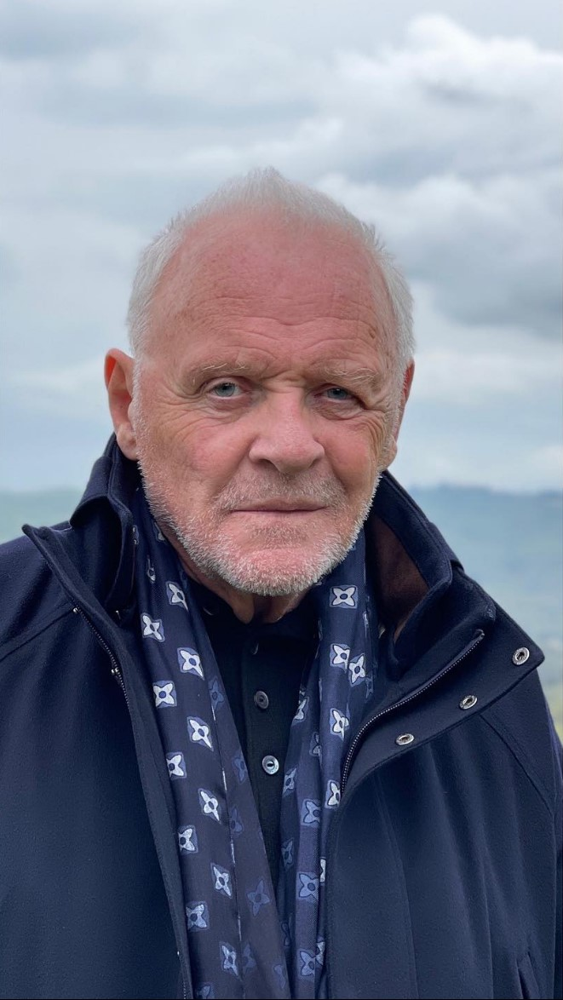

Aktor
Anthony Hopkins

Sir Philip Anthony Hopkins urodził się 31 grudnia 1937 roku w walijskim miasteczku Port Talbot.
Przez ponad 40 lat zagrał w ponad stu filmach i zdobył wiele wyróżnień i nagród (m.in. cztery nominacje do Oscara;
odebrał go pierwszy raz, za rolę Hannibala Lectera w ''Milczeniu owiec'', a drugi raz; za rolę
Anthony'ego w filmie "Ojciec" oraz siedem do nagrody Brytyjskiej Akademii Filmowej, otrzymał ją trzykrotnie)
Najbardziej znany z takich ról jak:
- Dr Hannibal Lecter w filmie "Milczenie owiec" 1991 rok (zdobył Oscara)
- Anthony w filmie "Ojciec" 2020 rok (zdobył Oscara)
- James Stevens w filmie "Okruchy dnia" 1993 rok
- Dr Hannibal Lecter w filmie "Hannibal" 2001 rok
- Dr Hannibal Lecter w filmie "Czerwony smok" 2002 rok
- Źródła:
- https://www.instagram.com/p/CSmo9QclMZL/?utm_source=ig_web_copy_link data dostępu: 30 listopada 2022 rok
- https://www.filmweb.pl/person/Anthony+Hopkins-48 data dostępu: 30 listopada 2022 rok